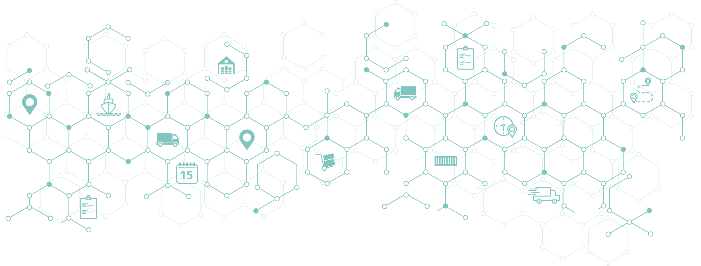

API Sourcing and Procurement
- Comprehensive assessment of client requirement and identification of suitable API sources.
- In-depth market research to identify reliable and high-quality API suppliers.
- Negotiation and procurement of APIs at competitive prices while ensuring adherence to quality standards.
- Thorough evaluation of supplier capabilities, including manufacturing facilities, regulatory compliance, and track record.
- Streamlined logistics and supply chain management to ensure timely and eficient delivery of APIs.
Generic MABs
Your trusted source of high-quality generic Monocional Antibodies (MABs).
We proudly collaborate with leading pharmaceutical manufacturers wolrlwide to bring you a diverse range of generic MABs that meet stringent quality standards and offer cost-effective alternatives branded options.
Quality Assurance
- Development and implementation of robust quality assurance processes for API sourcing and procurement.
- Evaluation and verification of supplier compliance with international quality standards and regulatory requirements.
- Comprehensive documentation and auditing of quality control processes throughout the supply chain.
- Regular monitoring and assessment of API quality through rigorous testing and analysis.
- Risk management strategies to mitigate potential quality issues and ensure consistent API quality.
Regulatory Compliance Assistance
- Expert guidance and support in navigating complex regulatory frameworks related to APIs.
- Assistance in obtaining necessary licenses, registrations, and certifications for API sourcing and distribution.
- Review and alignment of API sourcing processes with local and international regulatory requirements.
- Auditing of suppliers' regulatory compliance practices and documentation.
- Stay updated on evolving regulatory guidelines and provide proactive compliance recommendations.
Supply Chain Optimization
- Evaluation of existing supply chain processes to identify bottlenecks and areas for improvement.
- Development of customized strategies to optimize API sourcing, inventory management, and distribution.
- Collaboration with suppliers and other stakeholders to streamline supply chain operations.
- Implementation of advanced technologies and digital tools for enhanced visibility and efficiency.
- Continuous monitoring and analysis of supply chain performance to identify opportunities for cost savings and process optimization.

We value team work